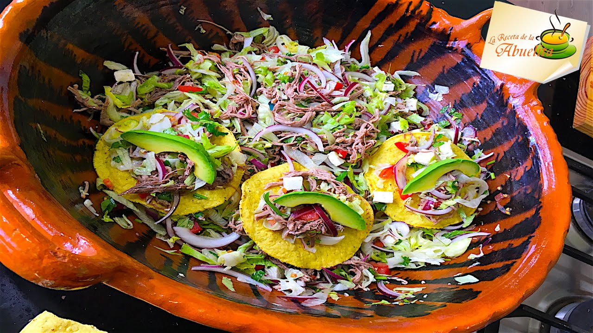

Coctel de café, el mejor revitalizante de la noche. Conócelo
- Apple Fresh un cocktail que anima y revitaliza totalmente
- 20 ideas de COCKTAILS | cocteles, té helado long island, tragos
- Apple Fresh un cocktail que revitaliza | Receta | Jugo de .
- Recetas de bebidas, cócteles e infusiones - Lecturas
- 3 recetas de cócteles con té | Blog de TEASHOP
- 10 tragos veraniegos fáciles de hacer para combatir el calor .
- Cócteles orgánicos: ideas energizantes, antioxidantes y .
- Coctel de cafe, el mejor revitalizante para una noche
- Coctel de café, el mejor revitalizante de la noche. Conócelo
- Conviértete en el rey de los cócteles con estas aplicaciones
Cubaneando con Mario
Menu Inicio Entrantes Plato Principal Cocteles Curiosidades Postres Home Cocteles Coctel de café, el mejor revitalizante de la nocheCoctel de café, el mejor revitalizante de la noche
In CoctelesTabla de contenidos
1 Cómo preparar fácilmente el coctel de café 1.1 Ingredientes 1.2 PreparaciónSabemos que en verano las temperaturas aumentan considerablemente, por lo que se tiende a buscar de qué manera combatir ese terrible calor mediante diferentes maneras. Y esta receta de coctel de café , puede ser una de esas ayudas que encontremos a lo largo del día.
Las bebidas son una buena opción si queremos hidratarnos. Beber algo fresco o bien frío, nos refrescará, da igual si es un simple vaso de agua o un coctel con café.
En esta ocasión traemos un coctel totalmente refrescante y a la vez con las capacidades de revitalizar. Esta bebida te permitirá disfrutar de una larga noche de fiesta. En esta receta de coctel de café te digo, paso a paso, como elaborarlo.
Otras recetas elaboradas con café: Mousse de café Bundt Cake de café Café granizado de chocolate
Podrás combinar en un solo trago la frescura de una bebida fría y la cafeína que te dará la suficiente energía, como para creerte que el día sólo comienza. Así que poniendo manos a la obra, veamos cómo elaborar este formidable coctel.
Cómo preparar fácilmente el coctel de café
Ingredientes
1 lata de leche evaporada (puede ser o no sin lactosa) 1 lata de leche condensada 6 copas de brandy de la marca de tu preferencia 3 cucharadas de café soluble Media taza de agua Cubitos de hieloPreparación
En media taza de agua, disuelve 3 cucharadas de café soluble para que éste sea concentrado y de sabor fuerte, pudiendo aportar todo su sabor, su cuerpo y su olor al trago. En la licuadora, agregamos varios cubitos de hielo y lo trituramos el tiempo suficiente para que quede como hielo frappé. Reservamos el hielo triturado en el congelador. En la misma licuadora colocamos todos los ingredientes: la leche evaporada, la leche condensada, la media taza de café y el brandy. Batimos todos los ingredientes hasta que se fusionen totalmente. Agregamos el hielo triturado que teníamos en el congelador a la licuadora y comenzamos otra vez a batir. De manera que todos los sabores se concentren, se mezclen y se vuelvan una bebida homogénea. Vertemos la cremosa bebida dentro de un vaso, el cual podemos decorar con unos cuantos granos de café en la superficie o simplemente servirlo con un removedor para cocteles.Existe una diversidad inmensa de variantes de este coctel de café . Entre las variantes más conocidas se encuentran:
Sustituir el café soluble por un expreso. Utilizar licor de café, en vez de café soluble o expreso. Cambiar el brandy por vodka.Como puedes ver, puedes transformar este coctel según tus propias preferencias. Se adapta a todos los gustos e ingredientes que tengamos en casa.
¿Te gustó esta receta de coctel de café? ¿ Por qué no compartirla ? Puedes usar tus redes sociales para que tus contactos conozcan este blog y ellos puedan preparar sus propios cocteles a base de café.
¿Te animas?
Tweet PinRecetas Relacionadas
5 cocteles sin alcohol para preparar en casa
Licuado de caqui y naranja
Ocho cocteles con vino tinto para festejar la llegada del otoño
Leave a Comment
Cancelar la respuestareport this ad Recetas Entrantes
Bollos de semillas de amapola Rollo de Jamón y Queso Americano Panqueques de queso Pan de soda irlandés Pasteles Salados Stovepipe Aderezo de miel y jugo de limón Huevos rellenos de Old Bay Enchiladas de verdurasRecetas Plato Principal
Rollitos de pavo BLT Keto Masa de pizza de calabacín Pollo Alfredo con coles de Bruselas Migas, un delicioso plato tradicional Linguini de camarones con vino Cestas de lechuga con tofu Pasta con Calabaza Alfredo Salmón BBQ con salsa de mangoRecetas Postres
Granola de calabaza Barras crujientes de manzana Pan de canela y manzana Galletas de chocolate y caramelo Bollos de chocolate triple Pastas de vainilla Barritas de Golden Grahams Pastel rústico de frambuesa y melocotónRecetas Cocteles
Coctel Tom Collins Coctel Ron Old Fashioned Coctel Mai Tai Coctel Rossini El Mojito, uno de los cocteles cubanos más famosos Coctel Horse’s Neck o Cuello de caballo Coctel Whisky Amargo Coctel Old CubanCuriosidades
5 platos de la gastronomía tailandesa que debes probar Los principales ingredientes de la gastronomía de Tailandia Los 5 mejores platos de la cocina tailandesa Los platos típicos de Tailandia que no puedes dejar pasar Comida Tailandesa: Mucho más que Pad Thai Platos Típicos Tailandeses que no te arrepentirás de probar Comida Tailandesa: Platos y postres típicos Gastronomía tailandesa: 4 platos típicos que debes probar report this ad Cubaneando con Mario Copyright © 2021. Política de Privacidad / Cookies / Aviso Legal Español Árabe Chino Holandés Inglés Francés Alemán Italiano Japonés Portugués Ruso Español x x

Mauris vulputate dolor
Rutrum fermentum nibh in augue praesent urna congue rutrum.
Etiam posuere